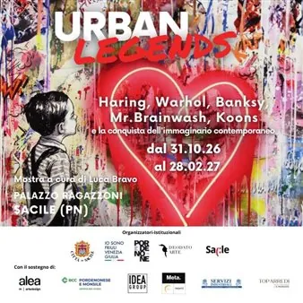

da sab 31 ott a dom 28 feb
Urban Legends. Haring, Warhol, Banksy, Mr. Brainwash, Koons e la conquista dell’immaginario contemporaneo
Mostra d’arte contemporanea internazionale che nasce con l’ambizione di raccontare uno dei fenomeni culturali più potenti e trasversali del nostro tempo: la trasformazione dell’arte in linguaggio globale, urbano, mediatico e popolare. A cura di Luca Bravo, promossa da Deodato…
 Indicazioni
Indicazioni
- Costi e prenotazioni
- Costo non indicato · Prenotazione non indicata
- Programma
- Programma da verificare. Apri la fonte ufficiale per orari e possibili aggiornamenti.
- In caso di maltempo
- Nessuna indicazione specifica pubblicata.
- Note
- Acquisito automaticamente dalla fonte.
L’EVENTO
Descrizione completa
Mostra d’arte contemporanea internazionale che nasce con l’ambizione di raccontare uno dei fenomeni culturali più potenti e trasversali del nostro tempo: la trasformazione dell’arte in linguaggio globale, urbano, mediatico e popolare. A cura di Luca Bravo, promossa da Deodato Arte.
Esistono immagini che osserviamo. E immagini che finiscono per osservarci, accompagnandoci così a lungo da diventare parte della nostra memoria. Urban Legends racconta la storia di questa conquista.
Il percorso attraversa oltre mezzo secolo di arte e cultura visiva, mettendo in relazione generazioni apparentemente lontane. Dalla rivoluzione della Pop Art, che trasforma gli oggetti, i volti e i simboli della società dei consumi in materia artistica, fino alla Street Art, che rompe i confini dello spazio espositivo e sceglie la città come luogo di espressione e confronto.
Warhol intuisce la potenza dell’immagine seriale; Koons eleva l’oggetto comune a monumento del desiderio; Haring inventa un alfabeto visivo immediato e universale. Con Banksy, Shepard Fairey e Mr. Brainwash, l’immagine diventa invece provocazione, critica, comunicazione: può apparire su un muro e, poche ore dopo, attraversare il mondo. Accanto a loro, le visioni di Angelo Accardi, Mr. Savethewall e Richard Orlinski raccontano un presente nel quale linguaggi, citazioni e simboli della storia dell’arte convivono e si contaminano continuamente.
I tre piani di Palazzo Ragazzoni diventano così tre capitoli di un unico racconto. Cambiano gli artisti, le epoche e i linguaggi, ma rimane una domanda: quando un’opera smette di appartenere soltanto all’arte e diventa parte della nostra cultura?
Urban Legends comincia da qui. Dal momento misterioso in cui un’immagine entra nei nostri occhi e, senza che ce ne accorgiamo, decide di restare. Se il Novecento è stato il secolo delle grandi ideologie, il nostro è forse il secolo delle immagini. E oggi la vera conquista non consiste più soltanto nell’entrare in un museo. Consiste nell’entrare nella memoria di milioni di persone. ( Luca Bravo , Curatore della mostra)
Quando dal 31.10.2026 al 28.02.2027, tutti i giovedì, venerdì, sabato e domenica
Apertura mostra sabato 31 ottobre ore 14:00
Orari Mostra
Giovedì e venerdì 10:00-13:00 e 14:00-19:00
Sabato e domenica 10:00-19:00
Festività:
martedì 8 dicembre ore 10:00-19:00
Venerdì 25 dicembre CHIUSO
Giovedì 31 dicembre ore 10:00-13:00 e 14:00-17:00
Venerdì 1 gennaio ore 16:00-19:00
Martedì 5 gennaio ore 10:00-19:00
Mercoledì 6 gennaio ore 10:00-19:00
Visite guidate con curatore:
Sabato 28 novembre ore 16:00
Sabato 19 dicembre ore 16:00
Sabato 23 gennaio ore 16:00
Visite guidate con Arteventi:
Domenica 15 novembre ore 11:00
Domenica 6 dicembre ore 11:00
Domenica 27 dicembre ore 11:00
Domenica 3 gennaio ore 11:00
Domenica 17 gennaio ore 11:00
Domenica 21 febbraio ore 11:00
Biglietti
acquistabili in loco negli orari di apertura o su Vivaticket
€ 15,00 Intero
€ 12,00 ridotto : ragazzi 11-17 anni, studenti, universitari con tesserino, over 70, guide turistiche, viaggiatori del Treno Storico del 8 dicembre
€ 10,00 : ridotto gruppi minimo 10 persone, scolaresche, FVGcard , sponsor friends
Gratuito : bambini 0-10 anni compiuti, giornalisti con tesserino, guide turistiche nell’esercizio dell’attività, influencer/ambassador accreditati, sponsor
Biglietto + € 10,00 : Visite guidate con curatore, minimo 10 max 30 persone, durata 1:30h
Biglietto + € 5,00 : Visite guidate con accompagnatore formato da curatore, durata ca. 1:00h
IL PROGRAMMA
Programma e orari
Appuntamenti raccolti dalle fonti elencate. Dove manca un orario, non è ancora disponibile in questa scheda.
Programma pubblicato
- Dal 2026-10-31 al 2027-02-28
INFORMAZIONI UTILI
Prima di partire
- Controllare la fonte prima di partire.
ORGANIZZAZIONE